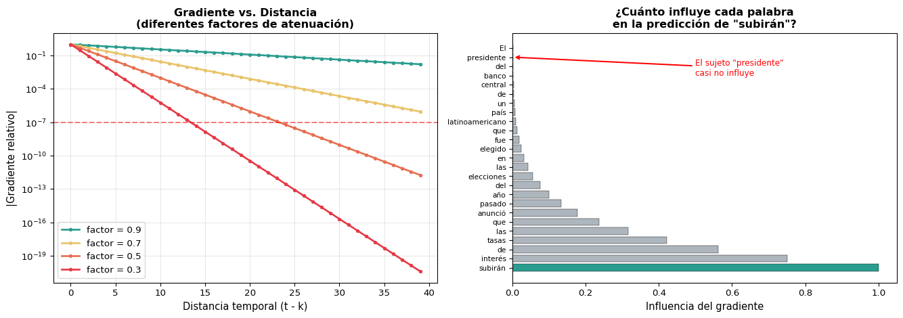
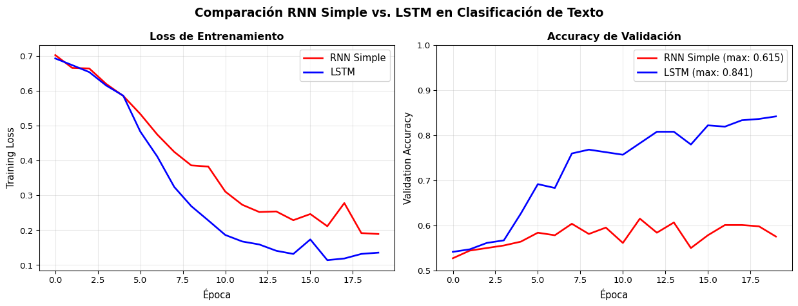
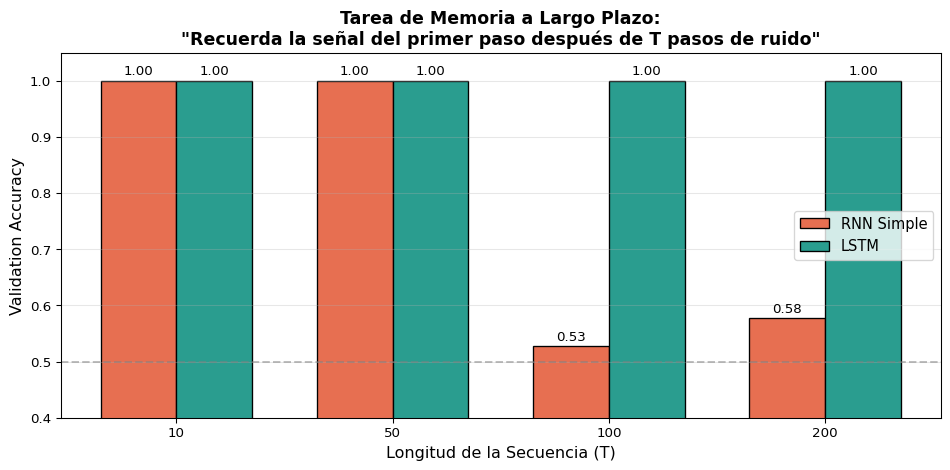
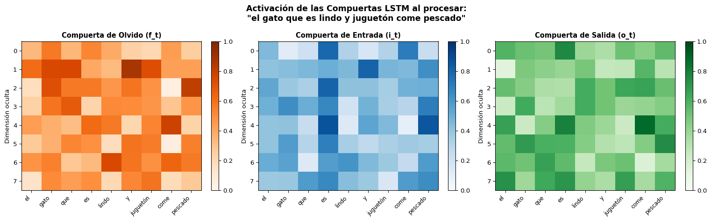

Multiplicar muchos valores \(< 1\) → resultado exponencialmente pequeño
Analogía: el juego del teléfono
Imagina pasar un mensaje por 30 personas:
Cada persona “atenúa” el mensaje un poco
Al final, el mensaje original está irreconocible
Los gradientes sufren el mismo destino
Demostración Numérica
import numpy as npimport matplotlib.pyplot as plt# Simular la multiplicación repetida de la derivada de tanh# La derivada de tanh está en (0, 1], típicamente ~0.5 para activaciones moderadasnp.random.seed(42)T =50# pasos temporales# Simulamos el producto de los factores del gradientegradient_magnitudes = []g =1.0tanh_derivs = []for t inrange(T):# Valor típico de tanh'(h) para activaciones moderadas d = np.random.uniform(0.1, 0.7) tanh_derivs.append(d) g *= d *0.9# factor de W_hh incluido gradient_magnitudes.append(g)print(f"Gradiente después de 10 pasos: {gradient_magnitudes[9]:.2e}")print(f"Gradiente después de 20 pasos: {gradient_magnitudes[19]:.2e}")print(f"Gradiente después de 30 pasos: {gradient_magnitudes[29]:.2e}")print(f"Gradiente después de 50 pasos: {gradient_magnitudes[49]:.2e}")
Gradiente después de 10 pasos: 1.42e-05
Gradiente después de 20 pasos: 2.63e-11
Gradiente después de 30 pasos: 7.74e-17
Gradiente después de 50 pasos: 1.98e-27
La Consecuencia Práctica
El gradiente se vuelve tan pequeño que los pesos no se actualizan. La red no puede aprender dependencias a largo plazo — no “recuerda” lo que vio hace 20+ pasos.
Visualización: Gradiente vs. Distancia Temporal
Code
import numpy as npimport matplotlib.pyplot as pltfig, axes = plt.subplots(1, 2, figsize=(14, 5))T =40# Izq: diferentes factores de atenuaciónfactors = [0.9, 0.7, 0.5, 0.3]colors = ['#2a9d8f', '#e9c46a', '#e76f51', '#e63946']for factor, color inzip(factors, colors): grads = [factor**t for t inrange(T)] axes[0].plot(range(T), grads, '-o', color=color, label=f'factor = {factor}', markersize=3, linewidth=2)axes[0].set_xlabel('Distancia temporal (t - k)', fontsize=11)axes[0].set_ylabel('|Gradiente relativo|', fontsize=11)axes[0].set_title('Gradiente vs. Distancia\n(diferentes factores de atenuación)', fontweight='bold', fontsize=12)axes[0].legend(fontsize=10)axes[0].set_yscale('log')axes[0].grid(True, alpha=0.3)axes[0].axhline(y=1e-7, color='red', linestyle='--', alpha=0.5, label='Precisión float32')# Der: ejemplo con texto realwords = ['El', 'presidente', 'del', 'banco', 'central', 'de', 'un', 'país','latinoamericano', 'que', 'fue', 'elegido', 'en', 'las', 'elecciones','del', 'año', 'pasado', 'anunció', 'que', 'las', 'tasas', 'de', 'interés','subirán']n =len(words)memory = np.array([0.75**i for i inrange(n)])[::-1]colors_bar = []for i, w inenumerate(words):if w =='presidente': colors_bar.append('#e76f51')elif w =='subirán': colors_bar.append('#2a9d8f')else: colors_bar.append('#adb5bd')axes[1].barh(range(n), memory, color=colors_bar, edgecolor='black', linewidth=0.3)axes[1].set_yticks(range(n))axes[1].set_yticklabels(words, fontsize=8)axes[1].set_xlabel('Influencia del gradiente', fontsize=11)axes[1].set_title('¿Cuánto influye cada palabra\nen la predicción de "subirán"?', fontweight='bold', fontsize=12)axes[1].invert_yaxis()axes[1].annotate('El sujeto "presidente"\ncasi no influye', xy=(memory[1], 1), xytext=(0.5, 3), arrowprops=dict(arrowstyle='->', color='red', lw=1.5), fontsize=9, color='red')plt.tight_layout()plt.show()

Gradient Clipping: Solo Medio Remedio
Gradient clipping (que ya usamos en S1) evita que los gradientes exploten, pero no soluciona el desvanecimiento:
# Solo previene explosión, NO desvanecimientotorch.nn.utils.clip_grad_norm_(model.parameters(), max_norm=1.0)
✅ Lo que sí resuelve
Gradientes que explotan (\(\|W_{hh}\| > 1\))
Entrenamiento inestable
NaN en los pesos
❌ Lo que NO resuelve
Gradientes que desaparecen (\(\|W_{hh}\| < 1\))
Pérdida de memoria a largo plazo
Incapacidad de aprender dependencias lejanas
Necesitamos una solución arquitectónica
No podemos resolver el vanishing gradient con trucos de entrenamiento. Necesitamos cambiar la arquitectura de la red para que los gradientes puedan fluir sin atenuarse.
Bloque 2: La Intuición de LSTM
¿Y Si la Red Pudiera “Decidir” Qué Recordar?
La RNN simple reescribe \(h_t\) completamente en cada paso:
\[h_t = \tanh(W_{xh} x_t + W_{hh} h_{t-1} + b)\]
Esto es como borrar una pizarra y volver a escribir en cada paso temporal.
Lo que hace la RNN simple
Toma \(h_{t-1}\) y \(x_t\)
Calcula un nuevo\(h_t\) desde cero
La info antigua sobrevive solo si \(W_{hh}\) la preserva “accidentalmente”
Lo que querríamos
Mantener información importante del pasado
Olvidar selectivamente lo irrelevante
Agregar nueva información de forma controlada
Que los gradientes fluyan sin atenuarse
Hochreiter & Schmidhuber (1997): ¿Y si añadimos una “autopista” para la información, con compuertas que regulen el flujo?
Así nace la Long Short-Term Memory (LSTM).
La Idea Clave: La Celda de Memoria
La LSTM introduce un segundo vector de estado: la celda de memoria\(c_t\).
La celda \(c_t\) se actualiza aditivamente — ¡sin \(\tanh\) aplastante!
Analogía: La LSTM como un Cuaderno
🗑️ Compuerta de Olvido
“¿Qué tachar del cuaderno?”
Lee la entrada actual \(x_t\)
Decide qué información antigua ya no es relevante
Ejemplo: Al ver un nuevo sujeto, olvidar el sujeto anterior
📝 Compuerta de Entrada
“¿Qué escribir en el cuaderno?”
Determina qué información nueva es importante
La escribe en la celda de memoria
Ejemplo: Registrar que el nuevo sujeto es “gato”
📤 Compuerta de Salida
“¿Qué leer del cuaderno ahora?”
No toda la memoria es relevante para el paso actual
Selecciona qué parte de \(c_t\) usar como salida \(h_t\)
Ejemplo: Solo necesito el sujeto para conjugar el verbo
La Clave
Las compuertas son funciones sigmoideas que producen valores entre 0 y 1, actuando como “válvulas” que regulan el flujo de información. Son aprendidas durante el entrenamiento.
La celda \(c_t\) se actualiza mediante una suma ponderada, no una transformación no lineal. Si \(f_t \approx 1\), entonces \(c_t \approx c_{t-1}\) — ¡la información pasa sin modificar! Los gradientes fluyen por esta “autopista” sin atenuarse.
Paso 4: Compuerta de Salida (\(o_t\)) y Estado Oculto (\(h_t\))
La red aprende a mantener \(f_t\) alto para dependencias largas
La “Autopista” del Gradiente
La celda \(c_t\) actúa como un Constant Error Carousel (CEC) — una autopista por donde la información y los gradientes pueden fluir sin degradarse, siempre que \(f_t\) se mantenga cercano a 1.
¿Cuántos Parámetros Tiene una LSTM?
Una LSTM tiene 4 veces más parámetros que una RNN simple (4 conjuntos de pesos: \(f\), \(i\), \(o\), \(\tilde{c}\)):
import torch.nn as nninput_size =100# embedding dimhidden_size =128# estado ocultornn = nn.RNN(input_size, hidden_size, batch_first=True)lstm = nn.LSTM(input_size, hidden_size, batch_first=True)rnn_params =sum(p.numel() for p in rnn.parameters())lstm_params =sum(p.numel() for p in lstm.parameters())print(f"RNN parámetros: {rnn_params:>8,}")print(f"LSTM parámetros: {lstm_params:>8,}")print(f"Ratio LSTM/RNN: {lstm_params/rnn_params:.1f}x")
RNN parámetros: 29,440
LSTM parámetros: 117,760
Ratio LSTM/RNN: 4.0x
Diferencia mínima en el código — solo cambiamos nn.RNN por nn.LSTM y desempaquetamos (h_n, c_n).
LSTM Multicapa (Stacked LSTM)
# LSTM con 2 capas + dropout entre capaslstm_stacked = nn.LSTM( input_size=64, hidden_size=128, num_layers=2, batch_first=True, dropout=0.3# dropout entre capas (no en la última))x = torch.randn(3, 10, 64)output, (h_n, c_n) = lstm_stacked(x)print(f"Salida: {output.shape} → salida de la ÚLTIMA capa")print(f"h_n: {h_n.shape} → h final de CADA capa")print(f"c_n: {c_n.shape} → c final de CADA capa")print(f"\nPara clasificación, usamos h_n[-1]: {h_n[-1].shape}")
Salida: torch.Size([3, 10, 128]) → salida de la ÚLTIMA capa
h_n: torch.Size([2, 3, 128]) → h final de CADA capa
c_n: torch.Size([2, 3, 128]) → c final de CADA capa
Para clasificación, usamos h_n[-1]: torch.Size([3, 128])
Entrenemos ambos modelos en el mismo dataset y comparemos:
Code
import torchimport torch.nn as nnimport numpy as npfrom sklearn.datasets import fetch_20newsgroupsfrom sklearn.model_selection import train_test_splitfrom collections import Counterimport matplotlib.pyplot as plt# ---------- Datos ----------categories = ['sci.space', 'talk.politics.misc']data = fetch_20newsgroups(subset='all', categories=categories, remove=('headers', 'footers'))texts, labels = data.data, data.targetdef simple_tokenize(text, max_len=100):return text.lower().split()[:max_len]all_tokens = [t for text in texts for t in simple_tokenize(text)]word_counts = Counter(all_tokens)vocab_list = ['<pad>', '<unk>'] + [w for w, c in word_counts.most_common(5000)]word2idx = {w: i for i, w inenumerate(vocab_list)}def encode(text, max_len=100): tokens = simple_tokenize(text, max_len) ids = [word2idx.get(t, 1) for t in tokens] ids += [0] * (max_len -len(ids))return idsX = torch.tensor([encode(t) for t in texts])y = torch.tensor(labels)X_train, X_val, y_train, y_val = train_test_split(X, y, test_size=0.2, random_state=42)train_ds = torch.utils.data.TensorDataset(X_train, y_train)train_loader = torch.utils.data.DataLoader(train_ds, batch_size=32, shuffle=True)# ---------- Modelos ----------class SimpleRNN(nn.Module):def__init__(self, vocab_size, embed_dim, hidden_dim, n_classes):super().__init__()self.embedding = nn.Embedding(vocab_size, embed_dim, padding_idx=0)self.rnn = nn.RNN(embed_dim, hidden_dim, batch_first=True)self.fc = nn.Linear(hidden_dim, n_classes)self.dropout = nn.Dropout(0.3)def forward(self, x): emb =self.embedding(x) _, h_n =self.rnn(emb) h =self.dropout(h_n.squeeze(0))returnself.fc(h)class LSTM_Model(nn.Module):def__init__(self, vocab_size, embed_dim, hidden_dim, n_classes):super().__init__()self.embedding = nn.Embedding(vocab_size, embed_dim, padding_idx=0)self.lstm = nn.LSTM(embed_dim, hidden_dim, batch_first=True)self.fc = nn.Linear(hidden_dim, n_classes)self.dropout = nn.Dropout(0.3)def forward(self, x): emb =self.embedding(x) _, (h_n, _) =self.lstm(emb) h =self.dropout(h_n.squeeze(0))returnself.fc(h)# ---------- Entrenamiento ----------def train_model(model, name, epochs=20): optimizer = torch.optim.Adam(model.parameters(), lr=0.001) criterion = nn.CrossEntropyLoss() train_losses, val_accs = [], []for epoch inrange(epochs): model.train() epoch_loss =0for xb, yb in train_loader: optimizer.zero_grad() loss = criterion(model(xb), yb) loss.backward() torch.nn.utils.clip_grad_norm_(model.parameters(), 1.0) optimizer.step() epoch_loss += loss.item() train_losses.append(epoch_loss /len(train_loader)) model.eval()with torch.no_grad(): val_acc = (model(X_val).argmax(1) == y_val).float().mean().item() val_accs.append(val_acc)return train_losses, val_accstorch.manual_seed(42)rnn_model = SimpleRNN(len(vocab_list), 64, 64, 2)rnn_losses, rnn_accs = train_model(rnn_model, "RNN")torch.manual_seed(42)lstm_model = LSTM_Model(len(vocab_list), 64, 64, 2)lstm_losses, lstm_accs = train_model(lstm_model, "LSTM")# ---------- Gráficas ----------fig, axes = plt.subplots(1, 2, figsize=(13, 5))axes[0].plot(rnn_losses, 'r-', linewidth=2, label='RNN Simple')axes[0].plot(lstm_losses, 'b-', linewidth=2, label='LSTM')axes[0].set_xlabel('Época', fontsize=11)axes[0].set_ylabel('Training Loss', fontsize=11)axes[0].set_title('Loss de Entrenamiento', fontweight='bold', fontsize=12)axes[0].legend(fontsize=11)axes[0].grid(True, alpha=0.3)axes[1].plot(rnn_accs, 'r-', linewidth=2, label=f'RNN Simple (max: {max(rnn_accs):.3f})')axes[1].plot(lstm_accs, 'b-', linewidth=2, label=f'LSTM (max: {max(lstm_accs):.3f})')axes[1].set_xlabel('Época', fontsize=11)axes[1].set_ylabel('Validation Accuracy', fontsize=11)axes[1].set_title('Accuracy de Validación', fontweight='bold', fontsize=12)axes[1].legend(fontsize=11)axes[1].set_ylim(0.5, 1.0)axes[1].grid(True, alpha=0.3)plt.suptitle('Comparación RNN Simple vs. LSTM en Clasificación de Texto', fontsize=14, fontweight='bold')plt.tight_layout()plt.show()rnn_p =sum(p.numel() for p in rnn_model.parameters())lstm_p =sum(p.numel() for p in lstm_model.parameters())print(f"\nRNN — Params: {rnn_p:>8,} | Best Val Acc: {max(rnn_accs):.4f}")print(f"LSTM — Params: {lstm_p:>8,} | Best Val Acc: {max(lstm_accs):.4f}")
RNN — Params: 328,578 | Best Val Acc: 0.6147
LSTM — Params: 353,538 | Best Val Acc: 0.8414

Experimento: Memoria a Largo Plazo
La entrada tiene 2 canales: señal (\(\pm 1\) en canal 0, solo en \(t=0\)) y ruido (gaussiano en canal 1, en todo momento). ¿Puede la red recordar la señal después de \(T\) pasos?
Code
import torchimport torch.nn as nnimport numpy as npimport matplotlib.pyplot as plt# Entrada bidimensional:# Canal 0: señal +1/-1 SOLO en t=0, ceros después# Canal 1: ruido gaussiano (std=1) en TODOS los pasos# El ruido constante empuja el estado oculto de la RNN en cada paso,# borrando progresivamente la señal. La LSTM puede cerrar la compuerta# de entrada (i_t ≈ 0) y preservar la señal en la celda c_t.hidden_dim =48n_train, n_val =4000, 500seq_lengths = [10, 50, 100, 200]results = {'RNN': [], 'LSTM': []}class MemoryModel(nn.Module):def__init__(self, model_type):super().__init__()if model_type =='RNN':self.rnn = nn.RNN(2, hidden_dim, batch_first=True)else:self.rnn = nn.LSTM(2, hidden_dim, batch_first=True)# Truco de Jozefowicz et al. (2015): inicializar el bias# de la compuerta de olvido en 1.0 para que f_t empiece ≈ 0.73for name, p inself.rnn.named_parameters():if'bias'in name: n = p.size(0) p.data[n//4:n//2].fill_(1.0)self.fc = nn.Linear(hidden_dim, 2)self.model_type = model_typedef forward(self, x): out =self.rnn(x)ifself.model_type =='LSTM': _, (h_n, _) = outelse: _, h_n = outreturnself.fc(h_n.squeeze(0))for T in seq_lengths: labels = torch.randint(0, 2, (n_train + n_val,)) X = torch.zeros(n_train + n_val, T, 2) X[:, 0, 0] = labels.float() *2-1# señal en canal 0, t=0 X[:, :, 1] = torch.randn(n_train + n_val, T) # ruido en canal 1 y = labels.long() X_train, X_val = X[:n_train], X[n_train:] y_train, y_val = y[:n_train], y[n_train:] loader = torch.utils.data.DataLoader( torch.utils.data.TensorDataset(X_train, y_train), batch_size=128, shuffle=True)for model_type in ['RNN', 'LSTM']: torch.manual_seed(42) model = MemoryModel(model_type) optimizer = torch.optim.Adam(model.parameters(), lr=0.001) criterion = nn.CrossEntropyLoss() best_acc =0.0for epoch inrange(80): model.train()for xb, yb in loader: optimizer.zero_grad() loss = criterion(model(xb), yb) loss.backward() torch.nn.utils.clip_grad_norm_(model.parameters(), 1.0) optimizer.step() model.eval()with torch.no_grad(): acc = (model(X_val).argmax(1) == y_val).float().mean().item() best_acc =max(best_acc, acc) results[model_type].append(best_acc)# Gráficafig, ax = plt.subplots(figsize=(10, 5))x_pos = np.arange(len(seq_lengths))width =0.35bars1 = ax.bar(x_pos - width/2, results['RNN'], width, label='RNN Simple', color='#e76f51', edgecolor='black')bars2 = ax.bar(x_pos + width/2, results['LSTM'], width, label='LSTM', color='#2a9d8f', edgecolor='black')ax.set_xlabel('Longitud de la Secuencia (T)', fontsize=12)ax.set_ylabel('Validation Accuracy', fontsize=12)ax.set_title('Tarea de Memoria a Largo Plazo:\n"Recuerda la señal del primer paso después de T pasos de ruido"', fontsize=13, fontweight='bold')ax.set_xticks(x_pos)ax.set_xticklabels([str(t) for t in seq_lengths])ax.legend(fontsize=11)ax.set_ylim(0.4, 1.05)ax.axhline(y=0.5, color='gray', linestyle='--', alpha=0.5)ax.grid(True, alpha=0.3, axis='y')for bar in bars1: ax.text(bar.get_x() + bar.get_width()/2., bar.get_height() +0.01,f'{bar.get_height():.2f}', ha='center', fontsize=10)for bar in bars2: ax.text(bar.get_x() + bar.get_width()/2., bar.get_height() +0.01,f'{bar.get_height():.2f}', ha='center', fontsize=10)plt.tight_layout()plt.show()

Resultado Clave
El canal de ruido constante empuja el estado oculto de la RNN en cada paso, borrando la señal. La LSTM aprende a cerrar la compuerta de entrada (\(i_t \approx 0\)) para el ruido y mantener la compuerta de olvido (\(f_t \approx 1\)), preservando la señal en \(c_t\).
Visualización: Las Compuertas en Acción
Code
import torchimport torch.nn as nnimport matplotlib.pyplot as pltimport numpy as np# Crear un LSTM y procesar una oración paso a pasotorch.manual_seed(42)vocab = {'<pad>': 0, 'el': 1, 'gato': 2, 'que': 3, 'es': 4, 'lindo': 5,'y': 6, 'juguetón': 7, 'come': 8, 'pescado': 9}embed_dim =16hidden_dim =8embedding = nn.Embedding(len(vocab), embed_dim)lstm_cell = nn.LSTMCell(embed_dim, hidden_dim)sentence = ['el', 'gato', 'que', 'es', 'lindo', 'y', 'juguetón', 'come', 'pescado']indices = torch.tensor([vocab[w] for w in sentence])embs = embedding(indices)# Registrar las compuertash = torch.zeros(1, hidden_dim)c = torch.zeros(1, hidden_dim)all_f, all_i, all_o = [], [], []for t inrange(len(sentence)): x = embs[t].unsqueeze(0)# Manualmente calcular las compuertas para visualizar gates = torch.mm(x, lstm_cell.weight_ih.T) + torch.mm(h, lstm_cell.weight_hh.T) + lstm_cell.bias_ih + lstm_cell.bias_hh i_gate = torch.sigmoid(gates[:, :hidden_dim]) f_gate = torch.sigmoid(gates[:, hidden_dim:2*hidden_dim]) c_cand = torch.tanh(gates[:, 2*hidden_dim:3*hidden_dim]) o_gate = torch.sigmoid(gates[:, 3*hidden_dim:]) c = f_gate * c + i_gate * c_cand h = o_gate * torch.tanh(c) all_f.append(f_gate.detach().numpy().flatten()) all_i.append(i_gate.detach().numpy().flatten()) all_o.append(o_gate.detach().numpy().flatten())all_f = np.array(all_f)all_i = np.array(all_i)all_o = np.array(all_o)fig, axes = plt.subplots(1, 3, figsize=(16, 5))for ax, data, title, cmap in [ (axes[0], all_f, 'Compuerta de Olvido (f_t)', 'Oranges'), (axes[1], all_i, 'Compuerta de Entrada (i_t)', 'Blues'), (axes[2], all_o, 'Compuerta de Salida (o_t)', 'Greens'),]: im = ax.imshow(data.T, aspect='auto', cmap=cmap, vmin=0, vmax=1) ax.set_xticks(range(len(sentence))) ax.set_xticklabels(sentence, rotation=45, ha='right', fontsize=9) ax.set_ylabel('Dimensión oculta', fontsize=10) ax.set_title(title, fontweight='bold', fontsize=11) plt.colorbar(im, ax=ax, fraction=0.046)plt.suptitle('Activación de las Compuertas LSTM al procesar:\n"el gato que es lindo y juguetón come pescado"', fontsize=13, fontweight='bold')plt.tight_layout()plt.show()

Interpretando las Compuertas
Los valores cercanos a 1 (colores oscuros) indican que la compuerta está “abierta”. Observa cómo diferentes dimensiones del estado oculto se activan para diferentes palabras — la red aprende a especializar cada dimensión.